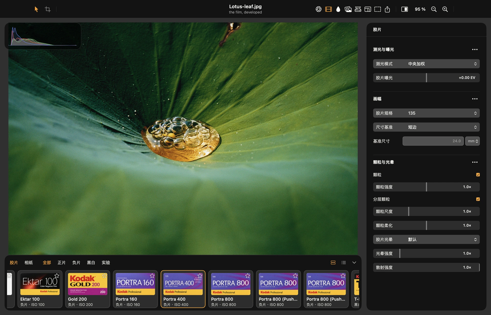
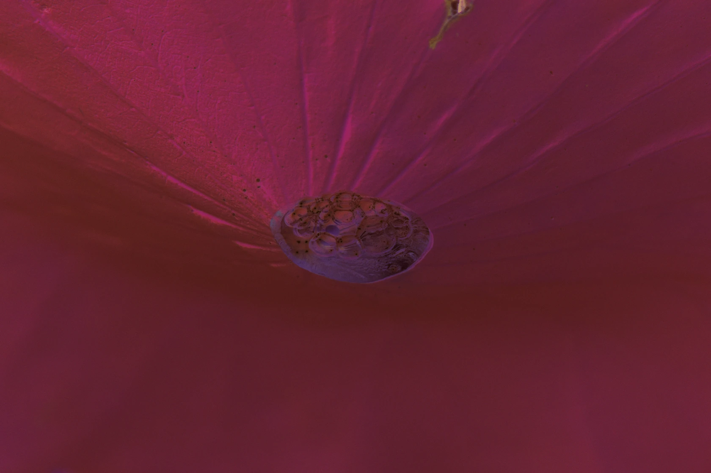
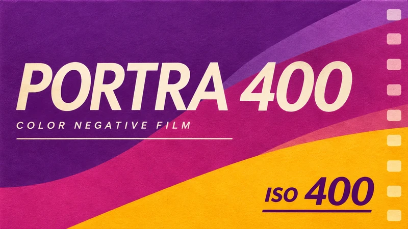
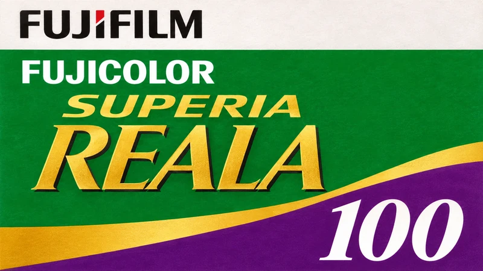
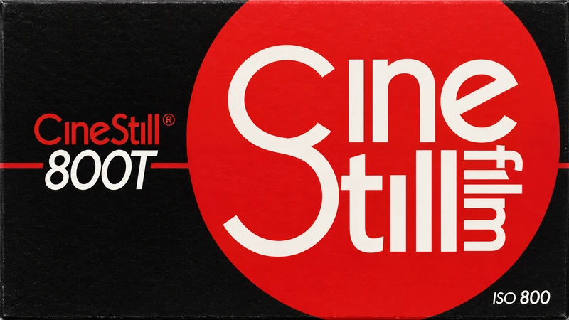
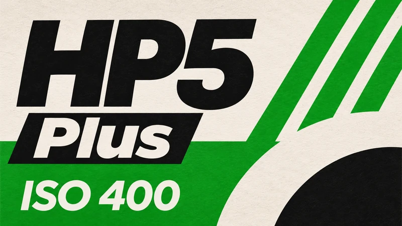
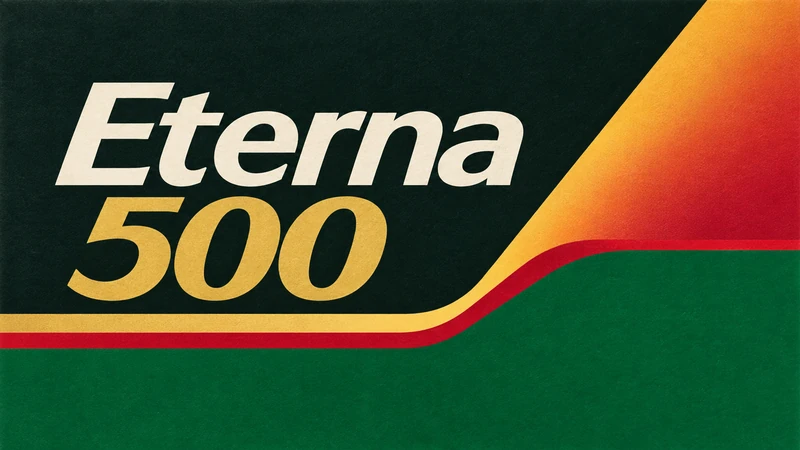
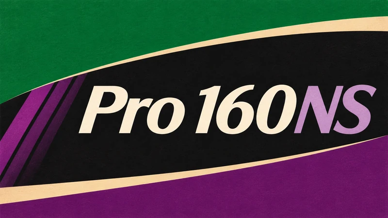
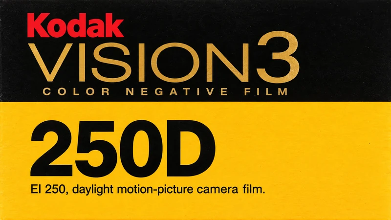
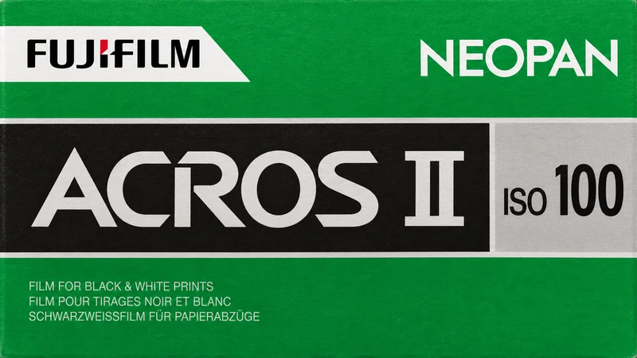

把照片带进暗房。
按暗房工序模拟胶片
从预处理到胶片曝光、显影与印相。免费开源，适用于 iPhone、iPad 和 Mac。


同一张照片，换一种胶片。
胶片渲染对比
同一张原片，同一种相纸。拖动滑杆，对比 Fujifilm Superia X-TRA 400 和 Kodak Vision3 500T，比较 Superia 更浓的粉色和绿色，以及 500T 更柔和的色调。两张都保留了颗粒和光晕。
先看成片
135 / 成片
先看不带片边的 Portra 400 印相。
加上片边
135 / 齿孔
印相位置不变，展开片边，露出上下两排齿孔。
读懂边码
135 / 帧号
上方印着 Kodak Portra 400 和第 24 格的帧号，下方是画格之间的边码。

胶片封面
胶片库 · 部分封面
这些是 Silverphase 胶片库里用来识别不同胶片的封面。








封面插画由 Silverphase 贡献者与 akinal5765-byte 制作，网页使用缩小版。第三方商标不在插画许可范围内。 封面署名与许可


Silverphase
你的第一张印相。
免费开源 · 在设备上处理
免费、开源，在设备上完成胶片模拟。
Mac 安装包采用 ad hoc 签名，未经过 Apple 公证。